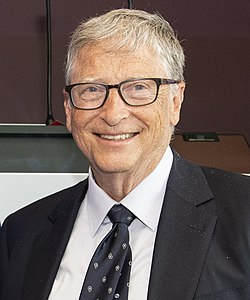
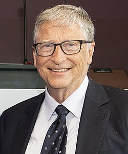

Bill Gates (Seattle, 1955. október 28. –) amerikai üzletember, szoftverfejlesztő, feltaláló, filantróp, a világ negyedik leggazdagabb embere.
1987 óta szerepel a Forbes magazin világ leggazdagabb embereit felvonultató listáján. 2018-ban vagyonát körülbelül 97,4 milliárd dollárra becsülték.
A Microsoft cég alapítójaként és tulajdonosaként Bill Gates fontos szerepet játszott a 20. század végén felvirágzó mikroszámítógép-ipar történetében, olyan széles körben elterjedt szoftverek fűződnek a nevéhez, mint az MS-DOS vagy a Microsoft Windows. A cég vezérigazgatói posztjáról 2000-ben, az elnöki pozícióról 2014-ben köszönt le, tanácsadóként tevékenykedik a cég jelenlegi igazgatója, Satya Nadella mellett.
Szülei sikeres üzletemberek voltak, s mindez egyfajta példaképet jelentett az ifjú Gatesnek.

Gates már nyolcadikos korában programozni tanult, BASIC nyelven, amely tevékenységet lenyűgözőnek találta. Első programja egy amőbajáték volt.
A játékot futtató számítógépnek nem volt képernyője, az eredményeket nyomtatóra küldte, lassú volt és nagy, de a fiatal Gatest lenyűgözte a tény, hogy ő, aki még hosszú ideig nem ihat alkoholt vagy vezethet autót, utasításokat adhat egy hatalmas gépnek, és az végrehajtja őket. Akkoriban ismerkedett meg Paul Allennel, a Microsoft későbbi társalapítójával, aki iskolatársa volt, és osztoztak a számítástechnika iránti elkötelezettségben.
Gates egyetemi tanulmányait a Harvard Egyetemen kezdte meg, matematika szakon, 1974-ben, itt ismerkedett meg Steve Ballmerrel, a Microsoft egyik későbbi vezérigazgatójával. Tanulmányai nem kötötték le, 1976-ban a halasztás mellett döntött. Később sem szerzett diplomát.

Felesége Melinda Gates, akitől 3 gyermeke született: Jennifer, Rory és Phoebe. 1994-ben házasodtak össze. Melinda Gates Dallasban született, gazdasági és informatikai diplomát szerzett a Duke Egyetemen. 1987-ben kezdett dolgozni a Microsoftnál, itt ismerkedett meg Gatesszel.
Nagy szerepe volt abban, hogy Bill Gates figyelme a jótékonykodás felé fordult. 2021 májusában a Twitteren jelentették be, hogy az alapítványt közösen folytatják, de már nem egy párként.
Bill Gates és felesége, Melinda 2000-ben hozta létre a Bill és Melinda Gates alapítványt. Gates korábban is támogatott különféle seattle-i jótékonysági szervezeteket, iskolákat, a Harvard Egyetem Számítástechnika tanszékét, de az alapítvány létrehozása után ez a tevékenység nagyobb méreteket öltött.
A házaspár figyelme a szegény gyerekek támogatása és az orvosi célú kutatások felé fordult. Célul tűzték ki a gyermekhalandóság csökkentését, valamint az Egyesült Államokban beindítottak egy lakhatási programot hajléktalan családok számára.
Bill Gates 2005. március 2-án lovagi címet kapott II. Erzsébet brit királynőtől, elsősorban jótékonysági tevékenységének elismeréseként. Mivel nem birodalmi alattvaló, nevében a Sir előtag helyett a KBE utótagot használhatja (Knight Commander of the Order of the British Empire). Az elismerésre az Egyesült Királyság akkori pénzügyminisztere, Gordon Brown terjesztette fel.